El proceso de purificacion de agua consistema en eliminar cualquier elemento que pueda causar un riesgo para la salud, entre esos elementos se ecuentran; las sales, minerales, metales pesados, y quimicos.
Con la finalidad de establecer los limites permisibles en Mèxico para el agua de consumo humano nos basamos en las siguientes normas
NORMA OFICIAL MEXICANA NOM-127-SSA1-1994, «Salud ambiental, agua para uso y consumo humano – Límites permisibles de calidad y tratamientos que debe someterse al agua para su potabilización”.
NORMA Oficial Mexicana NOM-201-SSA1-2015, “Productos y servicios. Agua y hielo para consumo humano, envasados y a granel. Especificaciones sanitarias”.
Es importante recalcar que para diseñar un equipo correctamente es necesario un analizis fisico quimico del agua, ya que la calidad del agua es diferente en cada estado o ciudad del pais.